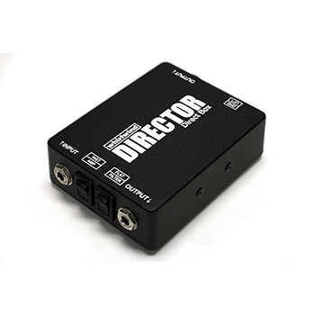
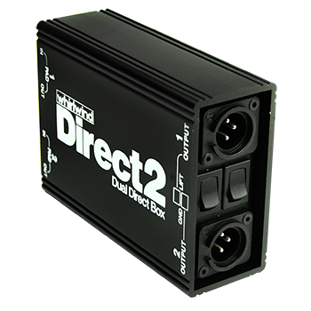
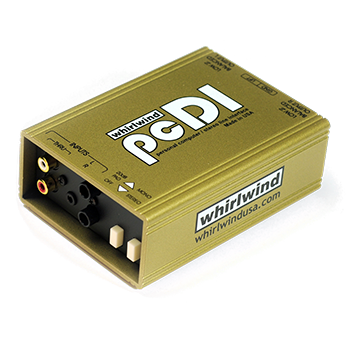
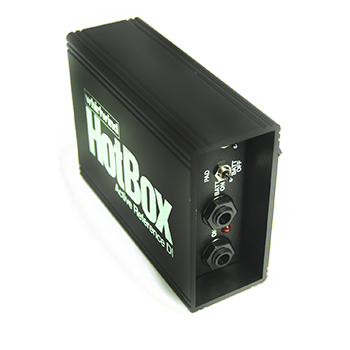
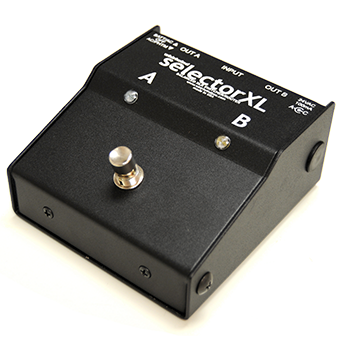

Passive DI
DIRECTOR®
Premium Direct Box
This premium direct box converts an unbalanced line, instrument or speaker level signal to low impedance balanced mic level.
Our Gear
Browse available Whirlwind direct box rental inventory from VD Audio Rental for touring, theatre, live production, and professional audio applications.

Filter available Whirlwind direct boxes by type below and contact us for availability, production support, and quote requests.
Request a QuoteSelect a category to view available Whirlwind options.

Passive DI
Premium Direct Box
This premium direct box converts an unbalanced line, instrument or speaker level signal to low impedance balanced mic level.

Passive DI
Premium Stereo Direct Box
The DIRECT2 combines features found on two of our DIRECTOR® direct boxes in one unit. Perfect for converting unbalanced signals from stereo keyboards, acoustic guitar preamps, CD and tape players, computer sound cards, etc.

Passive DI
Premium Stereo Direct Box
The Whirlwind pcDI is perfect for interfacing the outputs of CD players, computer sound cards, iPOD® / MP3 players, tape decks, etc. with professional, balanced, low impedance equipment.

Active DI
Active Direct Box
Our top-of-the-line DI is an active direct box that operates with batteries or phantom power. Its super-clean front-end circuitry delivers extremely wide and flat frequency response and will reveal hidden harmonics from guitars and basses with high-output passive pickups.

Footswitch
A/B Footswitch Selector
The SELECTORXL is a rugged footswitch box that lets a performer switch between two sound sources or send one source to two destinations, with true bypass switching to keep the signal path clean and noise-free.